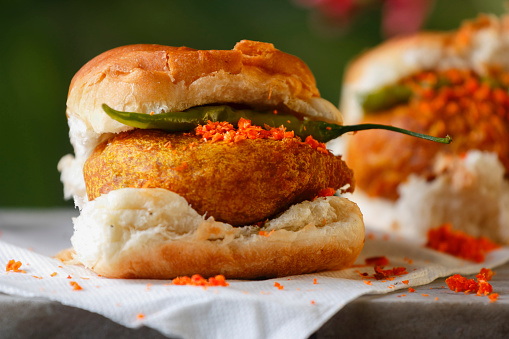

VadaPav

Vada pav, alternatively spelt wada pao, is a vegetarian fast food dish native to the state of
Maharashtra. The dish consists of a deep fried potato dumpling placed inside a bread bun (pav) sliced almost in
half through the middle. It is generally accompanied with one or more chutneys and a green chili pepper.
Although it originated as an affordable street food in Mumbai, it is now served in food stalls and restaurants
across India.
Ingredients
- 8 ladi pavs
- 1/2 cup boiled mashed potatoes
- 1 tsp Mustard Seeds
- 1/4 tsp Asafoetida
- 1/2 tsp Turmeric Powder
- 3/4 cup besan
Preparation
- Take oil in a pan, put hing, mustard seeds and saunf. Roast together.Add onion and Green chilli-garlic paste
and saute well.
- Now add boiled potatoes, turmeric powder, aa tsp of salt, 2 tsp of red chilli powder and coriander
leaves.Mix them well and add lemon juice. Saute to make a paste.
- Put oil in a pan and add garlic along with red chilli whole, white sesame seeds and desiccated coconut.
- Mix them well and add roasted peanuts and half a tsp each of salt and red chilli powder. Mix well.
- Now add tamarind and grind all the ingredients together to get a paste
- Next, take a bowl and add besan, soda, a tsp each of salt and red chilli powder.Put some water and mix
thoroughly to make a besan mix.
- Take the prepared masala paste and make small ball of it.Dip the balls completely in to the besan mix and
deep fry in the pan.
- Put some green chillies in the pan to fry for a while.Take buns and put green chutney, masala paste and the
fried masala pakodas between them.
Go to Home